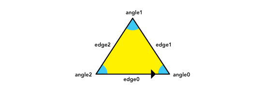
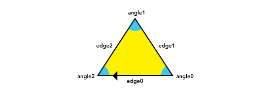
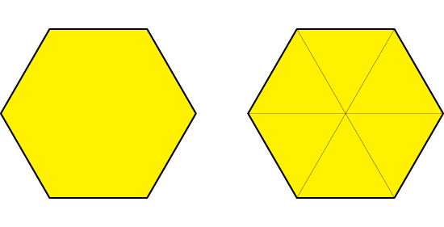

Shapes and their Representation
We restricted the shape domain to simply connected polygons. We chose a combinatorial approach to represent them, as a way to avoid a coordinate representation that would force us to deal with real number arithmetics. We wanted our system to do as much of the reasoning as possible in a rational number domain, with a few irrational constants like pi, (sqrt 2), (sqrt 3), and (sqrt 5). We uniquely represented polygons as loops of adjacent edges and corresponding angles, and we decided to distinguish different orientations as different polygons. This way, the triangle ((edge0 angle0) (edge1 angle1) (edge2 angle2)) will be different from the triangle ((edge0 angle2) (edge2 angle1) (edge1 angle0)), even though both representations will draw the same triangle with different orientations.
((edge0 angle0) (edge1 angle1) (edge2 angle2))

((edge0 angle2) (edge2 angle1) (edge1 angle0))

The shape representation is rotation invariant because it is a loop. It doesn't matter what edge is chosen as the starting point, as long as the polygon is described in the same orientation, the resulting shape will be the same. Circular lists in Scheme are a natural way of doing this.
Because shapes were going to be generated by fusing other shapes together, it became important to keep track of the internal edges of a shape, as a way to remember the parent shapes that composed it. If the roots of the shape generation tree were triangles, the resulting representation of a polygon would include it's outer shell and it's triangulated interior. The following illustration shows the representation of a hexagon and both ways of rendering it. The system knows which edges are internal so it can skip them when drawing the external shell.
((1 2/3 ((1 1/3 ()) (1 2/3 ()) (1 0 ()) (1 1/3 ()) (1 0 ()) (1 1/3 ())
(1 0 ()) (1 1/3 ()) (1 0 ()) (1 1/3 ()) (1 1/3 ()))) (1 2/3 ()) (1 2/3 ())
(1 2/3 ()) (1 2/3 ()) (1 2/3 ((1 1/3 ()) (1 0 ()) (1 1/3 ()))))

It is also important to observe that we used radians to represent angles, and in the combinatorial realm we factored pi out of our calculations, because we could easily factor it back in later, when rendering coordinates into the plane. This way, the angular magnitude of 1 becomes equivalent to pi and 1/2 becomes equivalent to pi/2.
Shape objects were implemented as record structures with a constructor method make-shape that would take a list of edge-angle pairs and build a shape object if possible, and a description extractor shape->description that would spit out a list of edge-angle pairs that will build the shape in question.